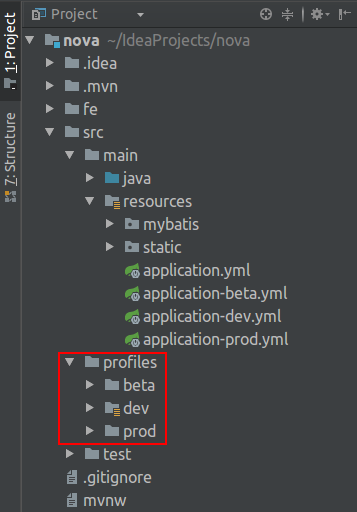

Spring Boot配置文件除了存在公有部分外，还可根据不同环境作差异化区分。例如：通过指定spring.profiles.active来设置哪些Profiles将被激活
| 字段名 | 用途 |
|---|---|
| applcation.yml | 与环境无关的配置 |
| application-dev.yml | 开发环境 |
| application-beta.yml | 测试环境 |
| application-prod.yml | 生产环境 |
这样，诸如数据库连接、应用端口号这类Spring Boot配置便能区分开来，不同环境拥有属于自己的独特空间。但是如果工程中使用了Logback、Dubbo等中间件，你就会发现还有些配置存在于独立文件中、而不能与上述文件进行整合，因此不能根据环境给出不同配置。要解决这一问题，还需要配合Maven Profile和Filtering来完成环境打包。
两种方案异同点对比
Spring Profile用于控制applcation-*.yml文件的加载情况，通常定义在applcation.yml里面：
1 | spring: |
而pom.xml文件中通常定义了Profile标识与资源路径的对应关系：
1 | <properties> |
例如，勾选这里了beta环境，那么src/profiles/beta目录下的文件将会拷贝到target底下供使用：

整合方案
如果实际使用过两种方案，相信很快就会遇到这样的问题：选用某个Maven Profile的时候，spring.profiles.active如何能够保持同步切换呢？博主经过一番探索，发现Maven Filtering可以解决这个难题。
- 首先，把
spring.profiles.active改造成下面这个样子，即将Profile抽取为某个占位符：
1 | spring: |
- 其次，增加maven-resources-plugin插件对上述占位符的替换支持：
1 | <properties> |
- 最后，增加
@spring.profiles.active@占位符与Profile标识的对应关系：
1 | <profiles> |